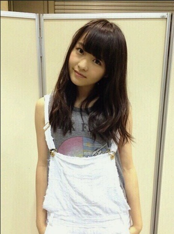
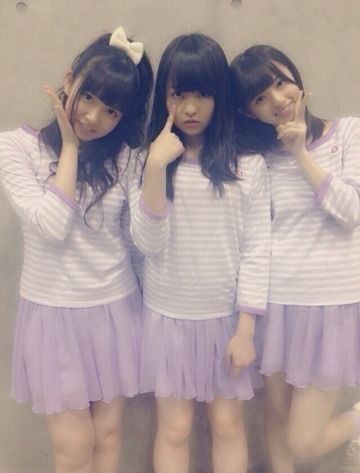

| 2014/06 23 Mon | 忍びナッツ。579回目 |
お久しぶりの個別握手会。
握手会が新しくなって
開場時間が早まったり
握手前も忙しくなりました。
1部、2部

夏になると着る
この白レースのサロペット！
ボロボロ！！通気性！！
お気に入りだよ

サロペット Auntierosa
タンクトップ ZURI
インナー UNIQLO
サンダル GAIMO
タンクトップとサンダルの色好き。
ピンクパープル？
服とか小物とか
この色ばっかり集めてたりする。
3部は以前日芽香と飛鳥と私の
BOMBの撮影で
使った衣装を着ました！

両手に花
BOMBだと気づいた方、流石！
プリンシパルの感想、
観に行った時に
まりかが二幕に出てなかった！
と残念がられる方が沢山いて
申し訳なかったです...
それぞれの二幕での感想、
どの役でもハマってた
まりからしかった
と言ってくださって
めちゃくちゃ嬉しかったです！
いろんな役できるって
やっぱりいいなあ
でも似合うのはポリン姫が
いちばん多かったかな？
何にせよ嬉しい。
らりんのラジオで初解禁になった
アンダー曲 ここにいる理由
の感想もありがとう！
好評みたいでよかったです。
んー早くライブで披露したい！！
いままでの握手会とは
全く違うかたちですが、
無事に握手会が開催されました。
やっぱり直接声をかけてくださると
元気もらえるし、なにより
笑顔が見られるだけで安心します。
初めてだったので、
戸惑いがあったと思いますが
対応してくださって
ありがとうございました！
そしてこれから
よろしくお願いします。

今週アンダーライブ始まるし、
リハも頑張ってるよ〜
前回以上に盛り上げなきゃ！
まりか
コメント(411)
2014/06/23 00:30